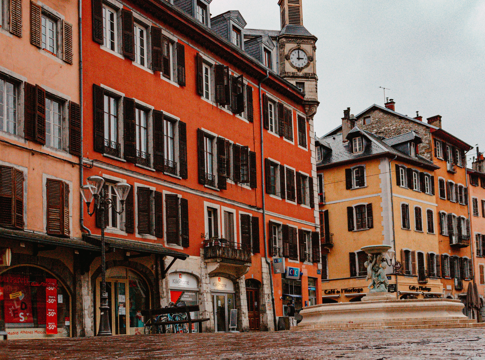
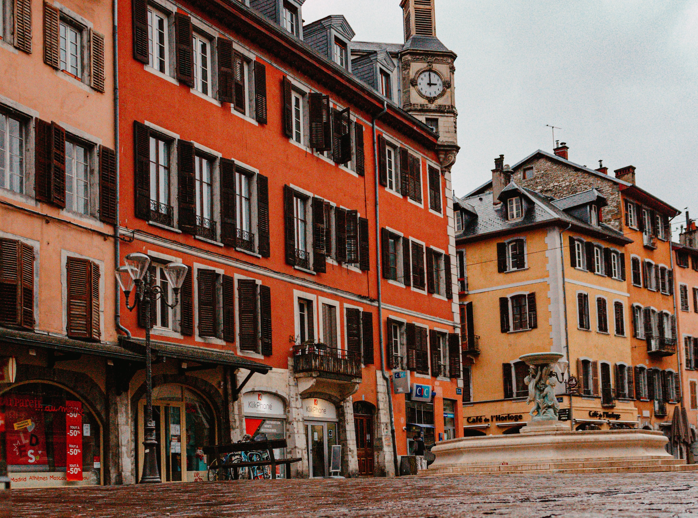

Parlons un peu de nous...
LE RESTAURANT
 

Le Quai Antique est un restaurant typique savoyard. Vous pouvez y déguster de nombreuses spécialitées de la région Auvergne-Rhône-Alpes, au sein même de son chef-lieu : Chambéry. Le lieu a été décoré afin que vous vous y sentiez comme dans un cocon montagnard, où il vous sera servi de la cuisine authentique et conviviale dans une ambiance familiale. L'objectif du restaurant est de vous faire découvrir ou redécouvrir la cuisine de Savoie avec les produits locaux.
LE CHEF
Le Chef Arnaud Michant est depuis toujours un amoureux de la Savoie. Pourtant natif d'Arcachon, il a réussi à s'intégrer parfaitement dans la région en sublimant les produits et producteurs locaux. Il va à la rencontre des petites exploitations voisines pour proposer de mettre en avant le terroir et la culture locale. Le Chef a déjà ouvert deux autres restaurants précédemment dans la région où il travaille également les produits savoyards mais avec une approche différente. Plus encore que dans ses deux autres restaurants, au Quai Antique, Arnaud Michant vous promet un voyage dans son univers culinaire.
L'EQUIPE
L'équipe est composée de huit personnes, le Chef Michant inclus. Elle se divise en deux, quatre personnes en cuisine et quatre personnes en salle. Le second, Mathias Duval, supervise la cuisine en l'absence du chef au côté de son commis Arnaud et d'une apprentie cuisine Solène. Pour vous accueillir vous retrouverez Jeanne, la responsable de salle accompagné de ses deux serveurs Enzo et Lucas et enfin, Camille qui est apprentie serveuse. Tous sont des passionnés de leurs métiers et ont à coeur de vous offrir le meilleur que ça soit dans votre assiette où au service. Ils vous attendent donc avec impatience.